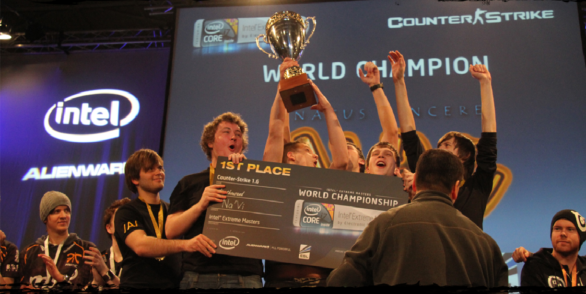

La fecha de fundación del colectivo puede considerarse el 17 de diciembre de 2009. En esos días, el equipo ucraniano KerchNET tuvo ciertos problemas y el equipo se disolvió. Cinco jugadores se reunieron bajo el ala de un patrón kazajo con el sobrenombre de Arbalet. La lista incluye jugadores legendarios: Zeus, Ceh9, Markeloff, Edward y Starix. Alexander Kokhanovsky, conocido con el sobrenombre de ZeroGravity, se convirtió en el gerente del equipo. Al principio, el equipo se llamaba Arbalet.UA. Unos meses más tarde, se llevó a cabo un concurso por el mejor nombre para la banda. Como resultado, se decidió llamarme Natus Vincere - Na'Vi. Traducido del latín, esta frase significa "nacido para ganar". Este apodo también se adjuntó al equipo y continúa hasta el día de hoy. En su primer torneo con una nueva etiqueta, el equipo ganó medallas de oro. Fue Intel Extreme Masters en Hannover. En la final Natus Vincere se enfrentó a los formidables suecos de fnatic, pero los cinco ucranianos resultaron ser más fuertes. El equipo se llevó a casa 50 mil dólares. Después de eso, Na'Vi ganó dos torneos más seguidos. En total, en 2010 consiguieron ganar 7 competiciones. El equipo ganó medallas de bronce en tres torneos más.
En 2011, el equipo tuvo un buen comienzo. Ganaron un torneo tras otro, pero al final del año los resultados no fueron los mejores. Sin embargo, el equipo obtuvo 2do y 3er lugar y por ello los jugadores recibieron un buen premio en metálico. Tambien se crearon los equipos FIFA, StarCraft II y League of Legends. Las nuevas listas no cumplieron con las expectativas y posteriormente se disolvieron. La excepción fue Yozhyk, quien es considerado uno de los jugadores de FIFA más fuertes.
2012 es un verdadero año “plateado” para Natus Vincere. Luego, el equipo tuvo 2 lugares sólidos en los torneos. El 4 de noviembre del mismo año se cambian a Counter-Stricker Global Offensive. La transición a un nuevo juego, que comenzó a ganar popularidad entre los jugadores y los deportistas electrónicos, fue bastante dolorosa, una derrota tras otra. Se necesitaban cambios.
En 2013, Markeloff y Edward dejan NaVi para unirse a Astana Dragons. Navi termina completando su roster con los rusos seized y kibaken. Pero el 9 de diciembre del mismo año Navi decide reemplazar al Ruso Kibaken y ceh9 por GuardiaN y la vuelta de Edward. Poco a poco, los resultados del equipo renovado comenzaron a mejorar.
En 2014, el equipo ganó varios torneos y también comenzó a ocupar un lugar destacado en eventos prestigiosos. Así, Born to Win ganó el trofeo StarLadder StarSeries IX en Kiev. En este torneo, lograron eludir a Titan, Virtus.Pro y Ninjas in Pyjamas.
En 2015, un nuevo jugador se unió al equipo: Egor flamie Vasiliev. Starix pasó de la posición de jugador a la de entrenador. La renovación de la lista también tuvo un impacto positivo en los resultados. Después de la llegada de flamie, el equipo ganó la StarLadder StarSeries XIII, Electronic Sports World Cup 2015. El año terminó con una victoria en Intel Extreme Masters X - San José. En la final los daneses de TSM fueron derrotados.
2016 comenzó con victorias para el equipo de CS:GO en DreamHack ZOWIE Leipzig 2016 y Counter Pit Season 2, pero luego siguió un largo declive. En un intento por recuperar la forma, se decidió reemplazar al legendario Zeus con el joven y talentoso Alexander "s1mple" Kostylev.
Alexander se adaptó rápidamente al nuevo equipo y, a finales de año, NAVI se había convertido en campeón de ESL One: New York. ¡En los EE. UU., s1mple ganó el primer premio MVP de su carrera!
2017 no fue el mejor para la organización de Counter-Strike: Global Offensive no pudo volver a la forma anterior, por lo que se realizaron los siguientes cambios en sus listas, GuardiaN decidió dejar las filas de la organización y unirse a FaZe Clan. En ese momento, no había un líder en el equipo, por lo que el regreso de Danylo "Zeus" Teslenko fue recibido con entusiasmo. Sin embargo, el equipo siguió experimentando dificultades y, a finales de año, se hizo otro reemplazo: seized pasó a inactivo, y su lugar fue ocupado por electronic. Estas reorganizaciones tuvieron un impacto positivo en los resultados del equipo, ya que el equipo logró clasificarse para varios torneos importantes.
En 2018 la lista de CS:GO también siguió complaciendo a los fanáticos con victorias y fortaleció significativamente sus posiciones en la arena mundial. NAVI ganó medallas de bronce en ELEAGUE Major Championships: Boston 2018, ESL Pro League Season 7 y ELEAGUE CS:GO Premier, plata en DreamHack Masters Marseille 2018 y SL i-League Season 4, y agregó tres trofeos a la colección: SL i - League Season 5, CS:GO Asia Championship y ESL One: Cologne 2018. Después de una serie tan impresionante de actuaciones exitosas, Natus Vincere se colocó legítimamente en la segunda línea de la clasificación mundial, y Alexander "s1mple" Kostylev recibió cinco MVP premios - se convirtió en el primer jugador en la historia de CS:GO, quien logró conseguir este título sin ganar el torneo. En FACEIT Major: London 2018, los Born to Win demostraron una vez más que son uno de los mejores equipos del mundo: NAVI se detuvo a un paso del trofeo, cediendo ante Astralis en el partido final.
En 2019 fue un año movido el 30 de marzo ficha a B1ad3 como nuevo director de eSports. llega Boombl4 y para no dejar a Edward en el banco lo presta hasta finales del 2019 a Winstrike Team, un 7 de septiembre vuelve al banco Edward. 14 de septiembre: Zeus se retira y Kane deja el cargo de entrenador.
20 de septiembre Natus Vincere ficha a GuardiaN ; B1ad3 asume el cargo de entrenador en jefe del equipo.
31 de diciembre: Edward deja Natus Vincere cuando expira su contrato.
En 2021 Na'Vi cerró la tercera temporada del Intel Grand Slam después de ganar IEM Katowice 2020 , IEM Cologne 2021 , DreamHack Masters Spring 2021 y ESL Pro League Season 14. El 7 de noviembre ganaron su primer CS:GO Major , PGL Estocolmo 2021 , derrotando a G2 Esports 2-0. El equipo Na'Vi obtuvo los primeros lugares en la BLAST Premier World Final 2021 y la BLAST Premier Fall Final 2021. Na'Vi también cooperó con Hator , productor de equipos informáticos orientados a los jugadores, en la coorganización de eventos de deportes electrónicos en 22 ciudades de Ucrania.